Ajourné · Interval Palette · M05 asset review (not live)
Comparisons and synthesis
Paired-family comparisons, the register comparison, inversion and the thirteen-landmark map. IPV-23, 24, 26, 27 are recomposed from the interval art (no extra model calls).
IPV-23 · COMPARE
Minor versus major second
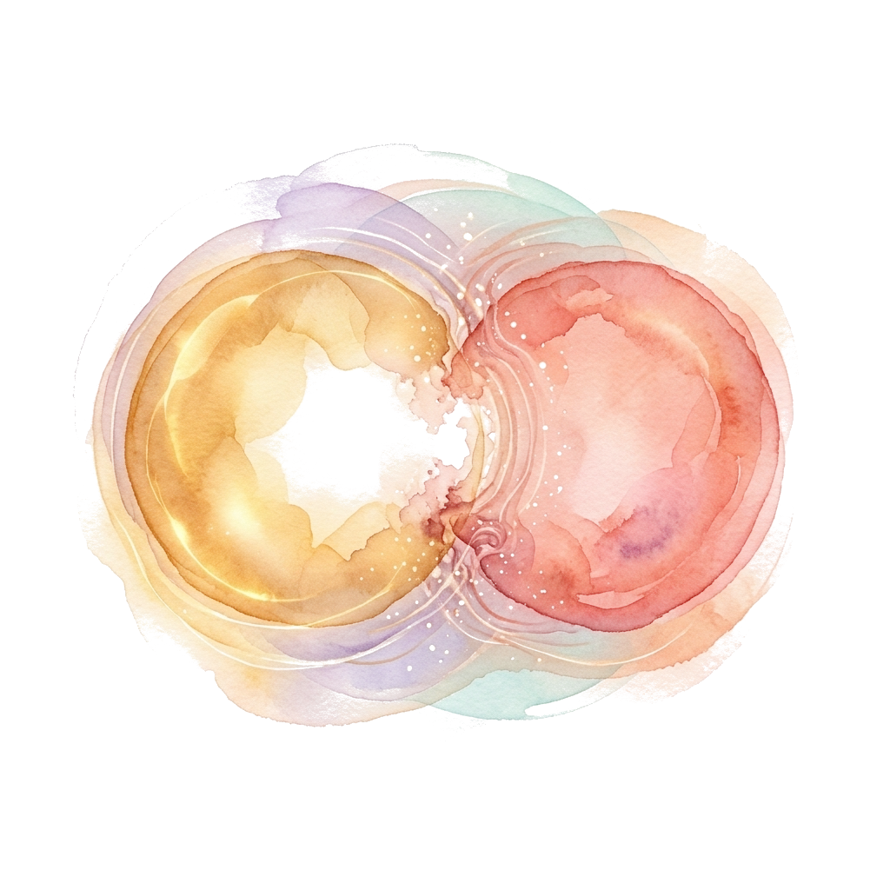
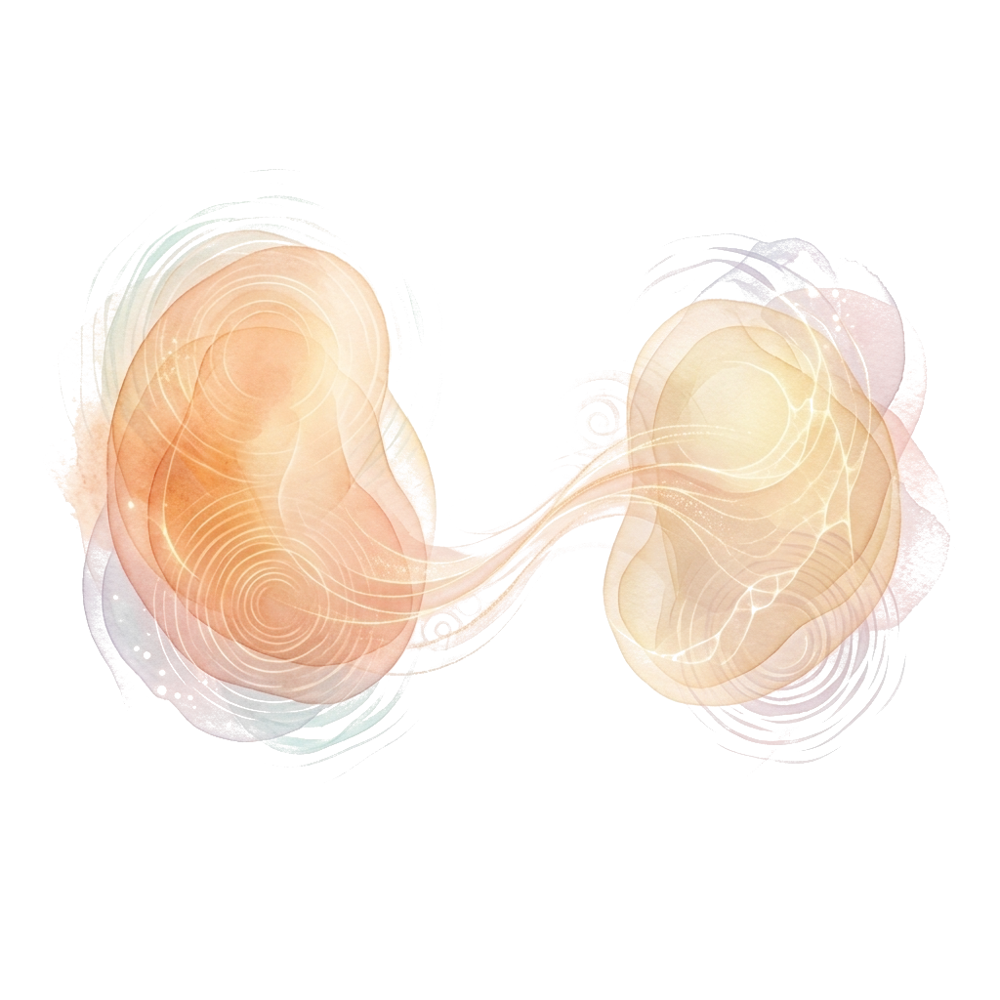
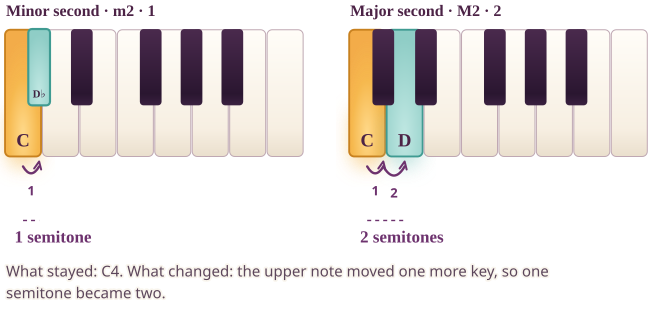
How to read the picture. C to D♭ is 1 semitone; C to D is 2. The lower note stays and the upper note moves one key.
On your own keyboard. Play C with D♭, then C with D. Count the extra key.
Alt text of the exact figure
Two keyboards, each from C4 to C5. The first highlights C4 and D♭4, 1 semitone. The second highlights C4 and D4, 2 semitones. The lower note C4 stays; the upper note moves one key.IPV-24 · COMPARE
Minor versus major third
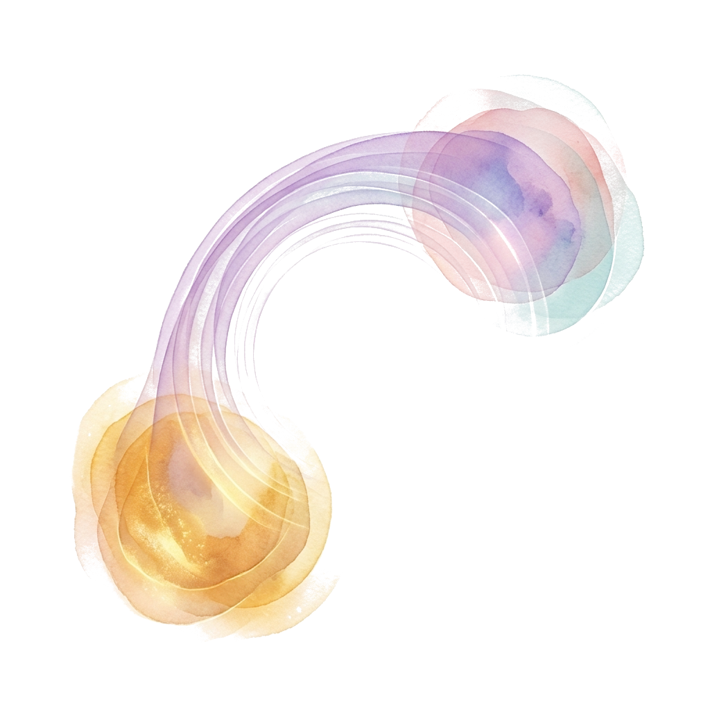
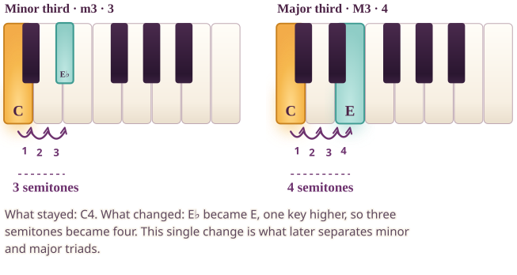
How to read the picture. Keep C. E♭ is three semitones above it, E is four. One key of difference.
On your own keyboard. Play C with E♭, then C with E. Notice only one finger moved.
Alt text of the exact figure
Two keyboards, each from C4 to C5. The first highlights C4 and E♭4, 3 semitones. The second highlights C4 and E4, 4 semitones. The lower note C4 stays; the upper note moves one key.IPV-25 · COMPARE
Fourth, tritone, fifth
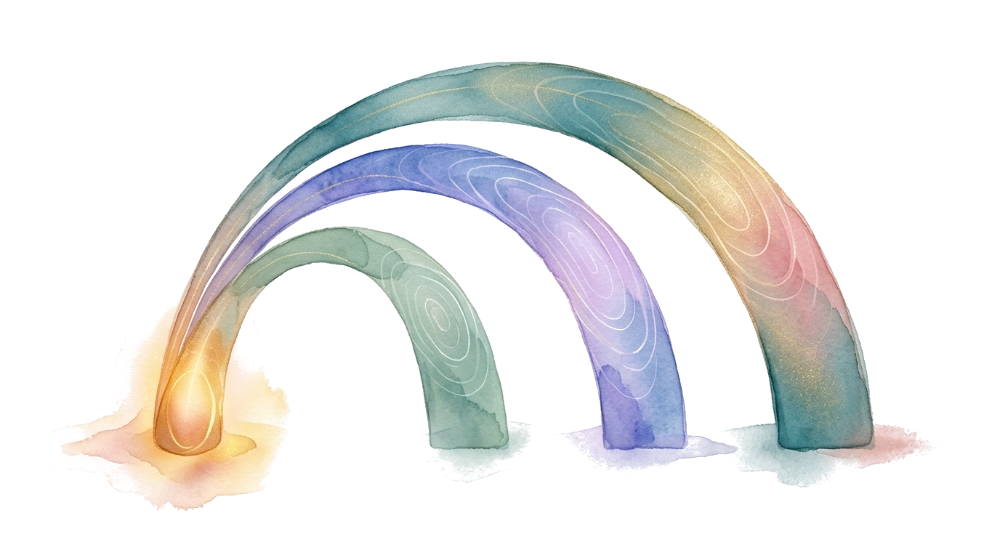
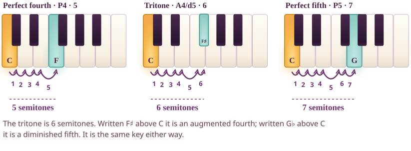
How to read the picture. Five, six and seven semitones above C: F, F♯ (or G♭) and G, three neighbouring keys.
On your own keyboard. Play C with F, with F♯, then with G.
Alt text of the exact figure
Three keyboards from C4 to C5 with C4 as the shared lower note and the upper note at F4 (5 semitones, perfect fourth), F-sharp4 (6 semitones, tritone, also written G-flat4) and G4 (7 semitones, perfect fifth).IPV-26 · COMPARE
Minor versus major sixth
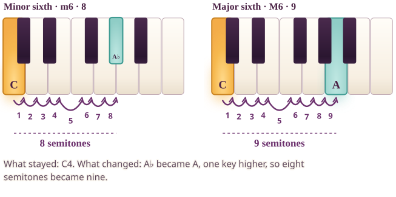
How to read the picture. Keep C. A♭ is eight semitones above, A is nine.
On your own keyboard. Play C with A♭, then C with A.
Alt text of the exact figure
Two keyboards, each from C4 to C5. The first highlights C4 and A♭4, 8 semitones. The second highlights C4 and A4, 9 semitones. The lower note C4 stays; the upper note moves one key.IPV-27 · COMPARE
Minor versus major seventh
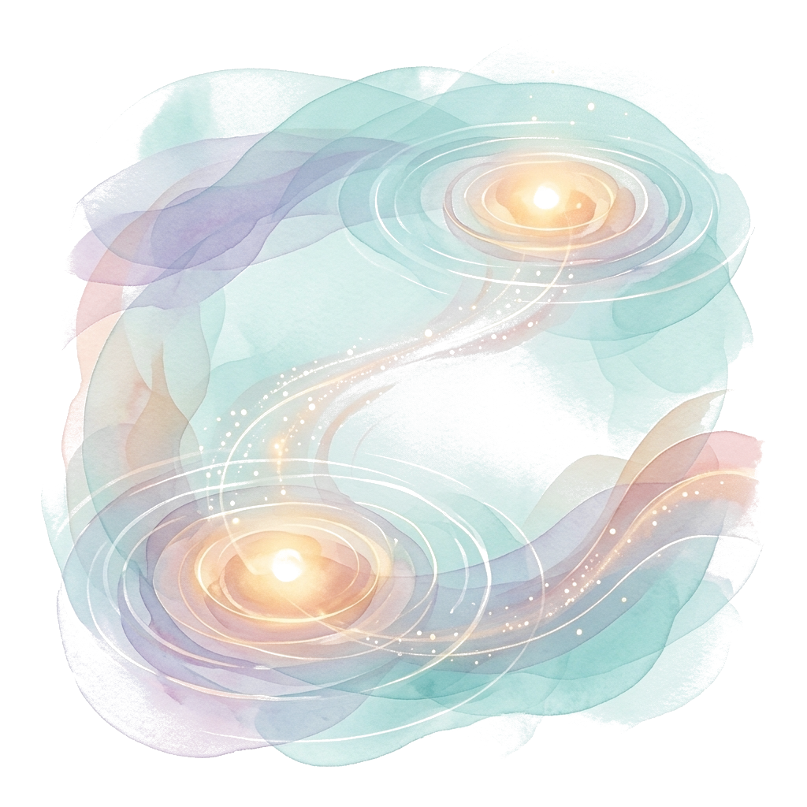
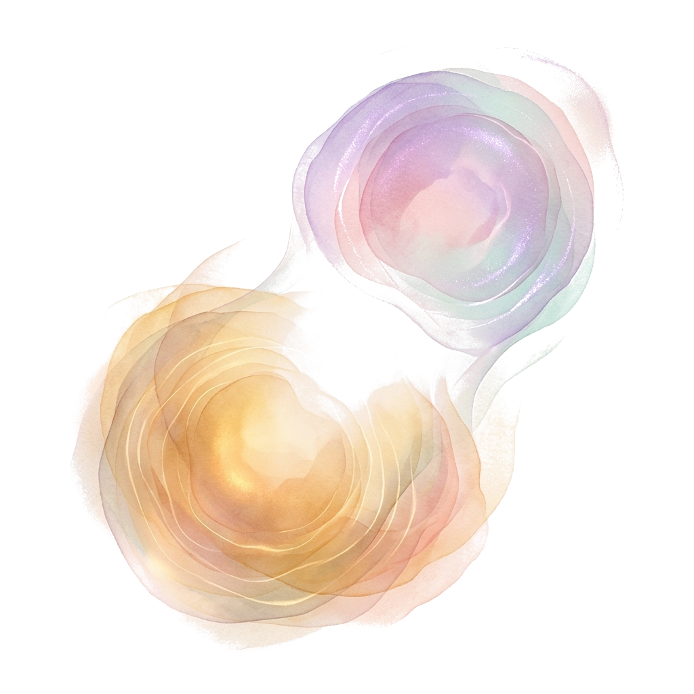
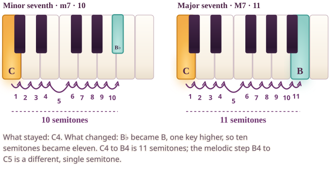
How to read the picture. Keep C. B♭ is ten semitones above, B is eleven. Neither is the octave.
On your own keyboard. Play C with B♭, then with B, then with the C above.
Alt text of the exact figure
Two keyboards, each from C4 to C5. The first highlights C4 and B♭4, 10 semitones. The second highlights C4 and B4, 11 semitones. The lower note C4 stays; the upper note moves one key.IPV-28 · COMPARE
Context changes what we hear
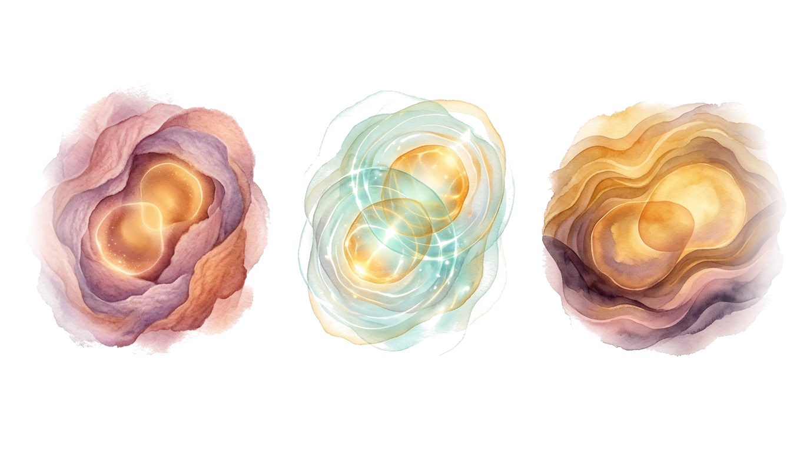
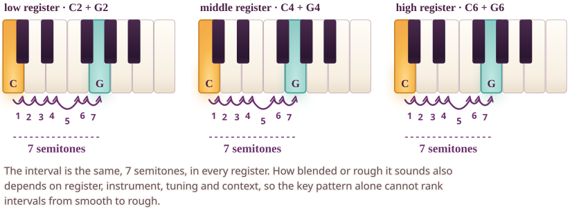
How to read the picture. The same perfect fifth, 7 semitones, built in three registers. The key pattern is identical.
On your own keyboard. Play C with G low on your keyboard, then in the middle, then high.
Alt text of the exact figure
Three keyboards showing the same perfect fifth, 7 semitones, built from C in a low, a middle and a high register. The distance is identical; the sound you get depends on register and instrument.IPV-29 · COMPARE
Interval inversion
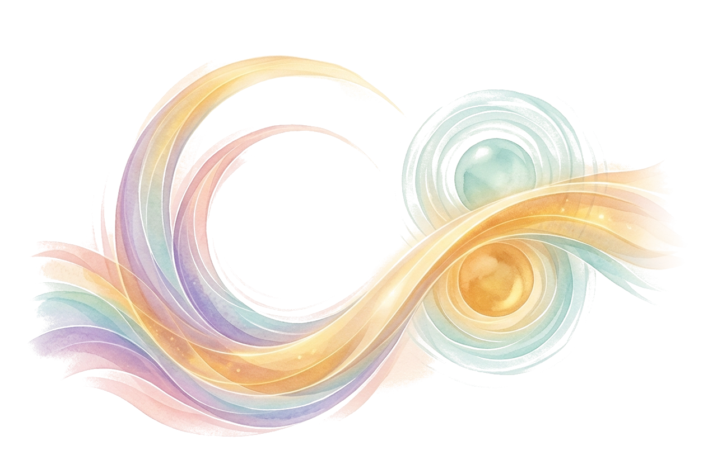
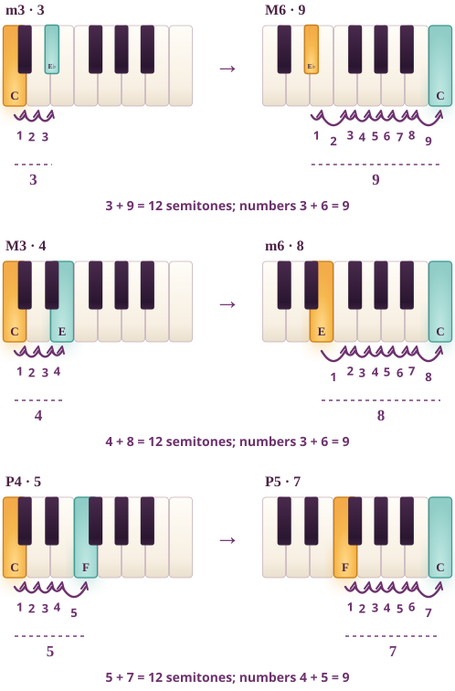
How to read the picture. Move the lower note up an octave: a minor third becomes a major sixth. The semitones add to 12 and the interval numbers add to 9.
On your own keyboard. Play C with E♭, then E♭ with the C above. Count 3 then 9.
Alt text of the exact figure
Three pairs. Take the lower note and move it up an octave. A minor third of 3 semitones (C to E-flat) becomes a major sixth of 9 (E-flat to C). A major third of 4 becomes a minor sixth of 8. A perfect fourth of 5 becomes a perfect fifth of 7. Each pair adds to 12 semitones; the interval numbers add to 9.IPV-30 · COMPARE
Thirteen-landmark map
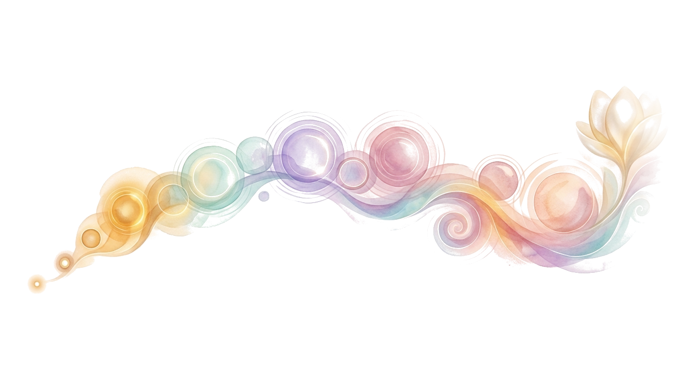
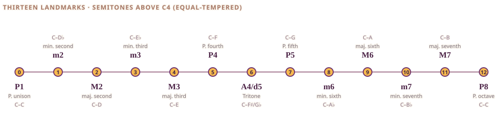
How to read the picture. All thirteen intervals with names and note pairs on one exact ruler. The painting is a journey, not a scale.
On your own keyboard. Choose one landmark, find it on your keyboard and play its two notes.